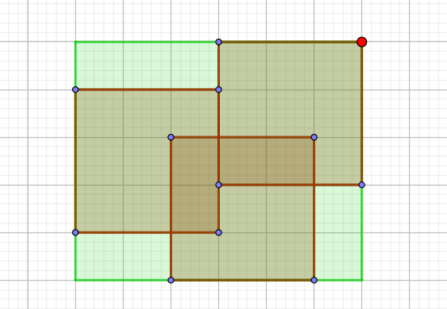

scx 在山上种了 $m$ 棵小树苗。冬天来了，温度急速下降，小树苗脆弱得不堪一击，于是 scx 想用一些塑料薄膜把这些小树遮盖起来。
经过一番长久的思考，她决定用 $3$ 个 $L \times L$ 的正方形塑料薄膜将小树遮起来。
我们不妨将山建立一个平面直角坐标系，设第 $i$ 棵小树的坐标为 $(x_i, y_i)$，$3$ 个 $L \times L$ 的正方形的边要求平行与坐标轴，一个点如果在正方形的边界上，也算作被覆盖。
当然，我们希望塑料薄膜面积越小越好，即求 $L$ 的最小值。
第一行包含一个正整数 $n$ ($n \leq 20000$)，表示有多少棵树。
接下来的 $n$ 行，第 $i + 1$ 行包含两个整数 $x_i, y_i$，表示第 $i$ 棵树的坐标，保证不会有两棵树的坐标相同。
输出一行一个整数，表示 $L$ 的最小值。
可以发现这个 "$3$ 个正方形"，它是个常数，尝试从中找到突破口。
由于是 $3$ 个边长相等且边平行于坐标轴的正方形，可以发现一个结论：这 $3$ 个正方形的外接矩形中，必有一正方形的一个顶点与外接矩形的某个顶点重合，如下图：
而证明是非常容易的。(如果都不重合，则一定有一条边可以更靠紧)
因此，考虑这 $n$ 个点的外接矩形，则也可以类似地推出：必有一正方形的一个顶点与外接矩形的某个顶点重合。
否则，这三个正方形至多与外接矩形的三条边接触，必然会与另一条边不接触。然而外接矩形的那条边上一定有一个点 (否则这条边可以向内部移动)，则这个顶点未被覆盖到。
首先二分答案，将原问题转化为判定型问题。
对于给定的边长，可以枚举其中一个正方形，与外接矩形的哪个顶点重合，然后把这个矩形所覆盖的点去掉，然后对于剩下的点，依次进行该操作 (因为 $3$ 个以下正方形该结论都成立)。
这个就像一种递归的过程，可以使用深度优先搜索 (dfs) 完成，不过要注意一些优化。
#include <bits/stdc++.h>
#define N 25611
using namespace std;
int n, i, L, R, M;
int x[N], y[N], next[3][N];
int X[2] = {INT_MAX, INT_MIN}, Y[2] = {INT_MAX, INT_MIN};
char covered[N];
inline void up(int &x, const int y) {x < y ? x = y : 0;}
inline void down(int &x, const int y) {x > y ? x = y : 0;}
bool dfs(int a, int dep){
bool flag;
int c, u, v, i, *nxt = next[dep], ax[2], ay[2];
if(!dep) {ax[0] = X[0]; ax[1] = X[1]; ay[0] = Y[0]; ay[1] = Y[1];}
else{
ax[0] = ay[0] = INT_MAX;
ax[1] = ay[1] = INT_MIN;
for(i = 1; i <= n; ++i)
if(!covered[i]){
down(ax[0], x[i]); up(ax[1], x[i]);
down(ay[0], y[i]); up(ay[1], y[i]);
}
if(ax[0] == INT_MAX) return true;
}
if(dep >= 3) return false;
ax[1] -= a; ay[1] -= a;
for(c = 0; c < 4; ++c){
u = ax[c & 1]; v = ay[c >> 1]; nxt[0] = -1;
for(i = 1; i <= n; ++i)
if(!covered[i])
if(u <= x[i] && x[i] <= u + a && v <= y[i] && y[i] <= v + a){
covered[i] = 1;
nxt[i] = nxt[0];
nxt[0] = i;
}
flag = dfs(a, dep + 1);
for(i = nxt[0]; ~i; i = nxt[i]) covered[i] = 0;
if(flag) return true;
}
return false;
}
int main(){
scanf("%d", &n);
for(i = 1; i <= n; ++i){
scanf("%d%d", x + i, y + i);
down(X[0], x[i]); up(X[1], x[i]);
down(Y[0], y[i]); up(Y[1], y[i]);
}
L = 0; R = max(X[1] - X[0], Y[1] - Y[0]);
for(; L < R; )
dfs(M = L + R >> 1, 0) ? R = M : L = M + 1;
printf("%d\n", R);
return 0;
}
坑1：在 dfs() 中尽量少用 memset() 可以用 vector <int> 或链表等最后依次删除。
坑2：还有就是 dfs() 的数组需要开局部数组，如果栈空间不够的话，可以按照深度地开全局数组。